ATARI Coin-Op/Arcade
Systems
1975 - 1976
Click
on images to see fullsized flyers
1975
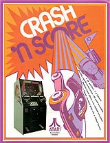Atari's
Crash N' Score. Numbered cones appear randomly on the
screen and you must frantically steering your car through the course and
crash into the cones in proper order making for a fun filled game where
crashing into things is the name of the game. Color overlays
on the B&W playfield give the look of color graphics adding to the
game playing experience.
March 1975
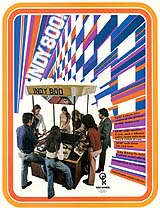Indy
800 by Kee Games, 8 way competition with fully color graphics, exciting
sound effects, realistic controls add up to a lot of fun. A
special optional remote starter button could be used to start a race by
a amusement operator who held competitions. Spectators
could watch the excite through overhead mirrors looking down onto the playfield,
this was a monster of a game taking up 16 square feet and a real crowd
pleaser.
June 6, 1975
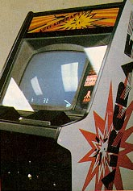Anti-Aircraft
hit the streets only a month after Tank II. The object
of the game was pretty similar to Missle Command -- Blow planes out
of the sky with cannon fire. Even the fire buttons were similar.
(Sorry, no Trak Ball yet.) Actually, it has more in common with the
Air-Sea Battle cartridge from the Atari 2600.
Sept. 25, 1975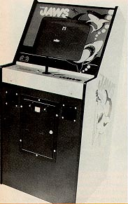Ahhhh,
the good-old days when you could base a game on a movie and not have pay
for the rights to it. Atari had Shark Jaws, someone else had
Killer Shark and there were probably a few more variations on the theme.
Atari advertised it as "exciting underwater video terror . . . Gulp!"
April 1976
 1
or 2 Players could be quiz on anything from Sports, Movies, People and
General questions. Using color overlays to give it a
faux color graphics effect you could choose from over 250 questions with
up to 4,000 possible answers. A fun and enjoyable game,
but completely overshadowed by another game which was released in April
1976... Breakout.
1
or 2 Players could be quiz on anything from Sports, Movies, People and
General questions. Using color overlays to give it a
faux color graphics effect you could choose from over 250 questions with
up to 4,000 possible answers. A fun and enjoyable game,
but completely overshadowed by another game which was released in April
1976... Breakout.
April 13, 1976
 The
ultimate in Pong, Breakout was designed by "this non-degreed engineer,
but sharp kid from Palo Alto, "explains Steve Bristow, "named Steve Jobs.
"(Do you know him? He's only the iCEO of Apple Computer.) Jobs had
an unusual working arrangement with Atari at the time. Bushnell would
describe a game and specify a certain number of integrated circuits (ICs)
he wanted jobs to use. For every IC he saved he received a $1OO bonus.
Jobs turned out a very compact prototype of what turned into Breakout.
"I think he brought it down from 80 to 30 ICs, " says Bristow. "It
wasn't common but that's how that one happened. " In truth
it was Job's friend Steve Wozniak who designed Breakout, not Jobs.
However jobs received a $5,000 bonus and told Wozniak it was only $700
and gave Steve Wozniak his "50%" ... $350. Years
later this truth would come out and it would add to the already increasing
friction between the two which eventually lead to Steve Wozniak quitting
Apple. Meanwhile at Atari, the Breakout design was ingenious,
however no one could figure it out so production could not begin, so it
had to be redesigned all over again by someone else.
The
ultimate in Pong, Breakout was designed by "this non-degreed engineer,
but sharp kid from Palo Alto, "explains Steve Bristow, "named Steve Jobs.
"(Do you know him? He's only the iCEO of Apple Computer.) Jobs had
an unusual working arrangement with Atari at the time. Bushnell would
describe a game and specify a certain number of integrated circuits (ICs)
he wanted jobs to use. For every IC he saved he received a $1OO bonus.
Jobs turned out a very compact prototype of what turned into Breakout.
"I think he brought it down from 80 to 30 ICs, " says Bristow. "It
wasn't common but that's how that one happened. " In truth
it was Job's friend Steve Wozniak who designed Breakout, not Jobs.
However jobs received a $5,000 bonus and told Wozniak it was only $700
and gave Steve Wozniak his "50%" ... $350. Years
later this truth would come out and it would add to the already increasing
friction between the two which eventually lead to Steve Wozniak quitting
Apple. Meanwhile at Atari, the Breakout design was ingenious,
however no one could figure it out so production could not begin, so it
had to be redesigned all over again by someone else.
1976
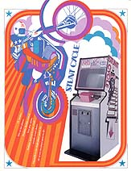Move
over Evil Knevil, here come the digital daredevils!!! Stunt
Cycle let the player use a real motorcycle handlebar equipped with throttle
for hair raising on-screen jumps off of ramps, over buses even pull wheelies.
This was a great game and Atari turned it into a stand alone home console
as well as an unreleased version of Stunt Cycle for the Atari VCS 2600.
Aug. 4,
1976
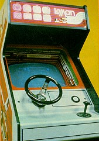One
of Atari's many driving games throughout its early years, Lemans featured
1O different tracks, each named after a famous raceway. Slow and
clunky, Lemans was definitely not a milestone by any stretch of the imagination.
However the game was a challenge and still a lot of fun!
1976
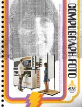Amazing!!!
A computer takes your photo and in 90 seconds prints out a 14" X 11" sheet
of computer graphics which looks just like you!!! (Well.... sorta)
This behemoth weighing in at 950lbs could be used in shopping centers,
malls, amusement parks or special events to add that special high-tech
twist to getting your photo taken.
Oct. 29,1976
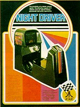Night
Driver and Midway's 280-Zzzzzap both were released at the 76 A.M.O.A. show.
Both exhibited the first use of first person driving. In Night Driver,
you sat in the driver's seat (only Atari's second sitdown, Hi-Way was the
first) and wound along an eerie stretch of road. It was also converted
into a cartridge for the VCS which stayed true to form. Although
by todays standards its certainly no SF Rush, but it is a remarkable fun
game both in the arcade version and the Atari 2600 VCS version.
1976
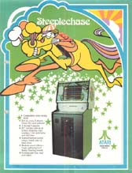Horse
racing video game style!!! With lighted control buttons that
matched your players horse up to 4 people could race against one another.
Add to this, realistic sound effects like hoof beating, galloping and crowds
cheering all made up for a unique and very entertaining change in coin-op
video game play.
Nov. 2,1976
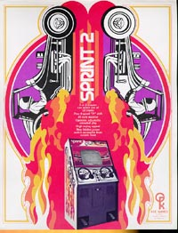"The
first game I ever came out with, "says Imagic's v.p. of software development
Dennis Koble, "was Sprint 2, which is still a good game. " Atari's
first mass-produced microprocessor-based game, Sprint 2 has legs.
People are still raving about its slick action. Says Howie Delman,
whose credits include Asteroids: "It's one of the great, great all-time
games. "
Nov. 5,1976
 Atari's
only projector game ever, F-I was a first for Atari in another more interesting
respect: It was licensed through Namco (Galaxian, Pac-Man, Dig Dug) in
Japan. Although unique in its concept and design, F-1
didn't fair as well as hoped, but it is still another one of Atari's long
line of racing games.
Atari's
only projector game ever, F-I was a first for Atari in another more interesting
respect: It was licensed through Namco (Galaxian, Pac-Man, Dig Dug) in
Japan. Although unique in its concept and design, F-1
didn't fair as well as hoped, but it is still another one of Atari's long
line of racing games.
Nov. 17,1976
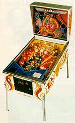The
first of the wide-bodies, The Atarians was the company's initial attempt
to break into the pinball market. Atari followed with a string of
games, including Time 2000, Airborne Avenger, Middle Earth and Space Rider.
Atari would also introduce one of the largest pinballs ever made... Hercules.
The game was so huge that it used cue balls as the pinballs!!!
Atari's last pinball before the group was shutdown in 1979 was Superman.
At least they went out in style!
1976
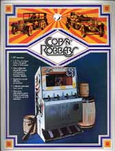Up
to 4 player action. Look down into the streets of gangster
land as you race and shoot at your opponents. Beer trucks provide
cover from "da coppers!" to make your escape or make a hit.
4 Settings, up to 3 minutes of play per quarter. Its a deal
you can't refuse!
 1
or 2 Players could be quiz on anything from Sports, Movies, People and
General questions. Using color overlays to give it a
faux color graphics effect you could choose from over 250 questions with
up to 4,000 possible answers. A fun and enjoyable game,
but completely overshadowed by another game which was released in April
1976... Breakout.
1
or 2 Players could be quiz on anything from Sports, Movies, People and
General questions. Using color overlays to give it a
faux color graphics effect you could choose from over 250 questions with
up to 4,000 possible answers. A fun and enjoyable game,
but completely overshadowed by another game which was released in April
1976... Breakout.
{kind=link}
{kind=link}
{kind=link}
{kind=link}
{kind=link}
{kind=link}
{kind=link}